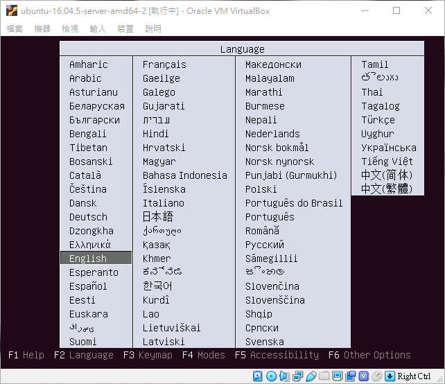

本文章將介紹使用 VirtualBox 軟體來安裝 Ubuntu Server ( 因為只是練習所以系統使用預設帶過，詳細的 ubuntu 安裝介紹會再寫篇文章 )
安裝 Ubuntu Server 是無法使用滑鼠的，僅能使用鍵盤來進行操作，請善用鍵盤的 Tab 鍵來跳到下一個項目，方向鍵來上下左右進行操作，如果要確定項目請使用 Enter 鍵，還有假如要選擇選項，那就使用空白鍵來進行選擇
1. 選擇安裝時要使用的語言

2. 選擇預設的 Install Ubuntu Server 來開始進行安裝 Ubuntu Server 系統

3. 選擇語言
4. 選擇你要的國家，這設定主要用來設定系統的時區，因為在預設的列表中沒有台灣，所以就選擇 other
5. 選擇 Asia 亞洲
6. 選擇 Taiwan
7. 因為系統語言選擇了英文，而國家地區選擇了非英語系的國家，所以接著 Ubuntu 會詢問你需要哪個國家的英文編碼格式，這邊就選擇預設的 United States-en_US.UTF-8 美式英文的編碼格式

8. 是否偵測鍵盤配置

9. 鍵盤排語系的設定，台灣是美式鍵盤所以本文章選擇美式

10. 美式鍵盤有多種不同的排列方式
11. 輸入主機名稱
12. 輸入使用者名稱

13. 輸入使用者帳號開頭必須小寫字母，接著就可以使用任意數字或其他的小寫字母組合 ( 可以跟使用者名稱一樣 )

14. 輸入密碼，用空白建選擇 Show Password in Clear 可以看到你輸入的密碼，給怕打錯的人使用

15. 再次輸入密碼
16. 輸入的密碼不到 8 個字元，所以就會出現密碼強度不足的提醒畫面，如果你需要重新修改密碼，那選擇 No 回到密碼設定畫面，重新輸入一組 8 個字元以上的密碼

17. 選擇是否加密家目錄，非必要可以不用加密

18. 設定時區，之前的選項有選擇了台灣，所以這邊 Ubuntu 會自動幫你將時區設為 Asia/Taipei，確定正確後選擇 Yes
19. 本文章不想要使用邏輯式的磁碟區（ LVM ），選擇 Guided-use entire disk 選項，有要使用邏輯式磁碟區，選擇 Guided-use entire disk and set up LVM，Ubuntu 就會引導你將邏輯式的磁碟區設定完成
PS：一般硬碟是自己手動分割的，很少選擇預設，但是本篇文章是練習用就先選擇預設帶過

20. 在建立虛擬機時，只建立了一顆虛擬硬碟，只能看到一顆硬碟了，直接選取這顆硬碟

21. 再次確定磁碟分割的設定，選擇 Yes 之後 Ubuntu 就會開始將系統安裝至你所選擇好的磁碟區了

22. HTTP proxy 的相關設定，本文章沒有要設定，所以欄位留空及選擇 Continue 繼續
23. 是否需要將系統設定為自動安全更新的畫面，這邊是選擇了 No automatic updates 不要自動更新，依照個人需求選擇
24. 選擇需要安裝的套件，使用空白建鍵來選取，沒安裝到之後也可以使用 apt-get 指令來安裝，依照個人需求選擇
25. 安裝 GRUB boot loader 至磁碟選擇 Yes，這樣 Ubuntu 才會建立開機選單，且開機之後，才會正常進入 Ubuntu Server

26. 安裝完成需要進行重開機的畫面，選擇 Continue 讓 Ubuntu 重開機
27. 進入登入畫面，輸入帳密登入


28. 下指令更新一下
1 | sudo su apt-get update |